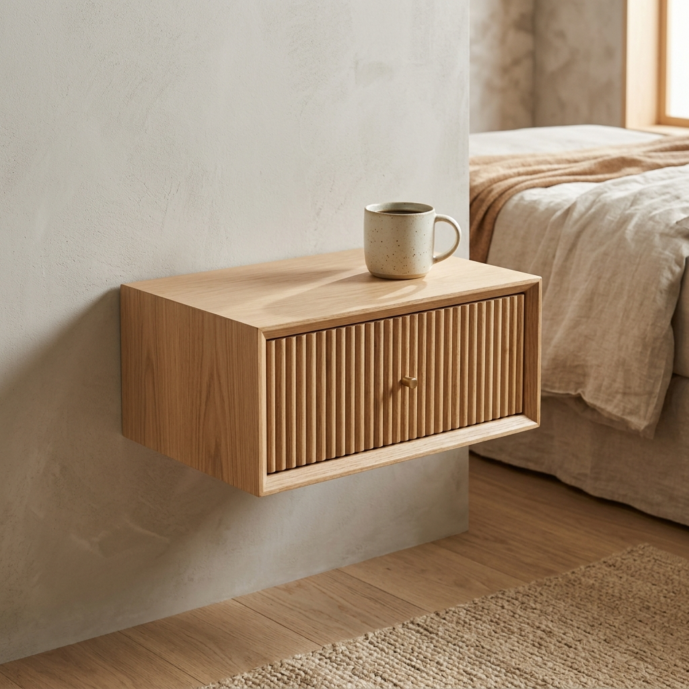
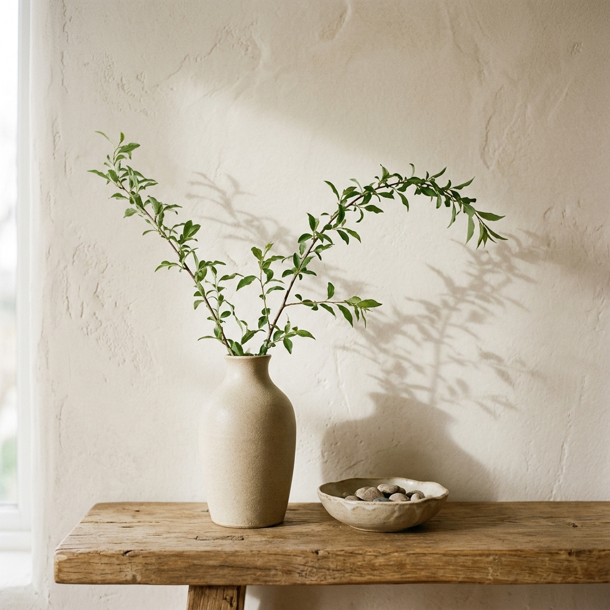
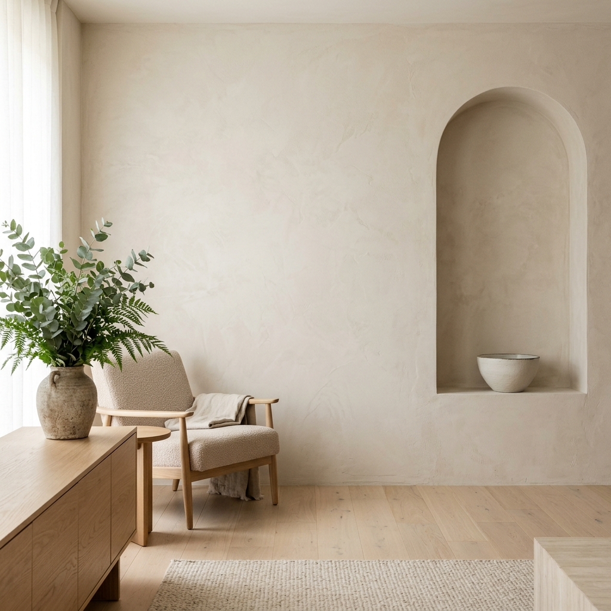

Designed
for stillness.
Made to last.
Timeless furniture and objects crafted from natural materials — where texture, light, and purpose come together in quiet balance.
EXPLORE COLLECTIONThoughtful design.
Natural materials.
Built for real life.
NATURAL MATERIALS
Sourced with care, chosen for beauty and durability.
CRAFTED BY HAND
Made by skilled artisans who value tradition and detail.
TIMELESS DESIGN
Pieces that stay relevant, season after season.
MADE TO LAST
Quality that endures through everyday living.

Forms That Remain
To strip away ornament is not to make a piece empty; it is to let the raw character of the oak grain outline speak its native language. — Marcus Aurelius

Floating Oak Nightstand
Wall-mounted single drawer bedside nightstand in solid oak, showcasing a clean minimalist design.
Journal Stockists
Find physical editions of the Kave Journal and explore wood specimens in person at our international partner spaces.


Atelier Nord
Nørrebrogade 4, 2200 Copenhagen Exhibited Specimens: European Oak, Ash, Linen Weave
Space Aoyama
5 Chome-10-1 Minamiaoyama, Minato City Exhibited Specimens: Baltic Ash, Textured Linen Weaves
Galleria Brera
Via Brera 16, 20121 Milano Exhibited Specimens: Raw Walnut, Belgian BoucléPrefer it at home?
Order a Journal or material sample kit to your doorstep.
Specimen Catalog
Tactile and geographical profiles mapping our architectural surfaces back to their raw geological origins.

 Tuscany, Italy
Tuscany, Italy
Honed Silver Travertine
Sedimentary limestone formed by thermal hot springs, presenting organic vesicular pores and cool grey bands.
 Spessart, Germany
Spessart, Germany
FSC White Forest Oak
Kiln-dried European oak displaying a tight growth-ring pattern, high density structural core, and raw oil finish.
 Gotland, Sweden
Gotland, Sweden
Organic Loop Bouclé Wool
Highly textured loop pile wool woven on historic jacquard looms, creating a soft cushioning acoustical layer.
The Aesthetics
of Quietness
A transcribed exchange between Chief Designer Karen H. and Spatial Architect Lars B. on auditory space limits.
"People focus on how furniture looks, but they live with how it sounds. A solid drawer sliding shut with a heavy, soft thud communicates more quality than any polished veneer ever could."
"Acoustic balance is the true invisible layer of modern architecture. When we interlock white plaster with open-grain oak slats, we aren't just absorbing sound waves; we are establishing a space where silence feels active."
The Journal Circle
Subscribe to receive printed quarterly monographs, design essays, and priority previews of new material batches directly to your address.

The Spessart Chronology
Drag the slider to trace the growth ring timeline of a white oak specimen from a sapling in 1926 to sustainable harvest in 2026.
Sapling Takes Root
A white oak sapling germinates in the deep sandy loams of the Spessart forest, starting its century-long carbon sequestration cycle.
Tactile Moodboards
Select an editorial palette combination below to witness how physical materials translate into atmospheric architectural spaces.
Nordic Silence Composition
A light-filled study utilizing low-absorption textures to foster deep concentration and structural calm.